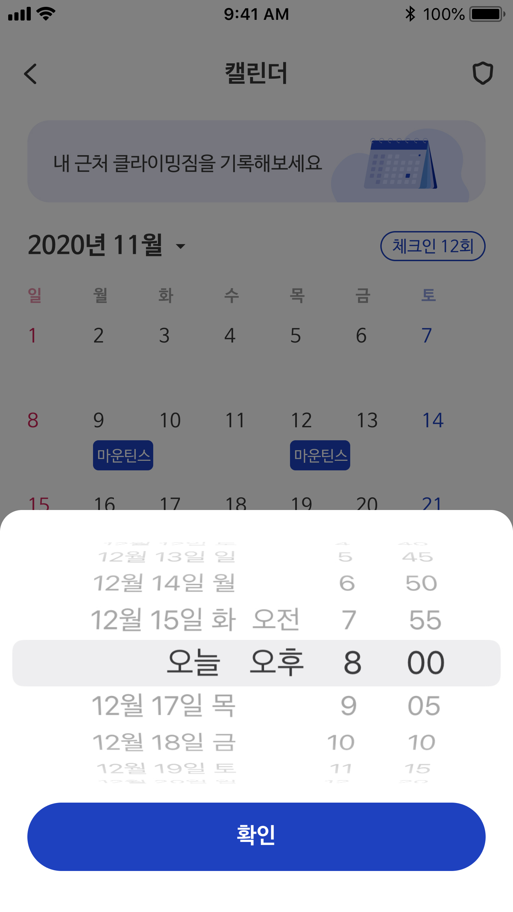

Feature 03 · Calendar Growth
"3개월째 다니는데 뭐가 달라졌는지 모르겠어요"
가설은 성장 확인 방법의 부재였지만, 실제는 확인할 기록 자체가 없다는 것이었다
FEATURE 03
·
CALENDAR GROWTH
기록이 쌓이면
성장이 보인다
영상을 찍어도 실력이 늘었는지 알 수 없었다.
캘린더에 방문·루트·컨디션이 쌓이면 내 클라이밍이 한눈에 보인다.
Core Value
"3개월째 다니는데 처음이랑 뭐가 달라졌는지 모르겠어요." 성장의 감각은 있지만 확인할 방법이 없었다. 캘린더에 쌓이는 기록이 그 답이다.
1
월별 캘린더로 방문 패턴 확인
어느 날, 얼마나 자주 다녔는지 달력으로 한눈에 보인다
2
날짜별 루트·컨디션·부상 기록
특정 날을 탭하면 그날의 기록이 펼쳐진다. 부상 이력이 쌓이면 반복 원인이 보인다.
3
배지로 꾸준함을 시각화
방문 횟수·연속 출석 등 배지가 쌓여 동기부여로 이어진다

1월별 방문 기록

2날짜별 상세 보기
3배지 달성